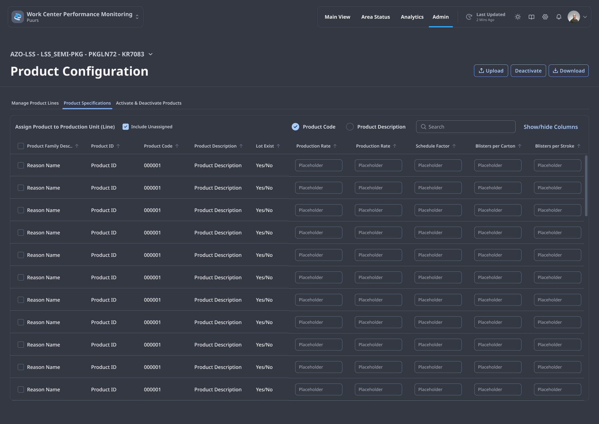
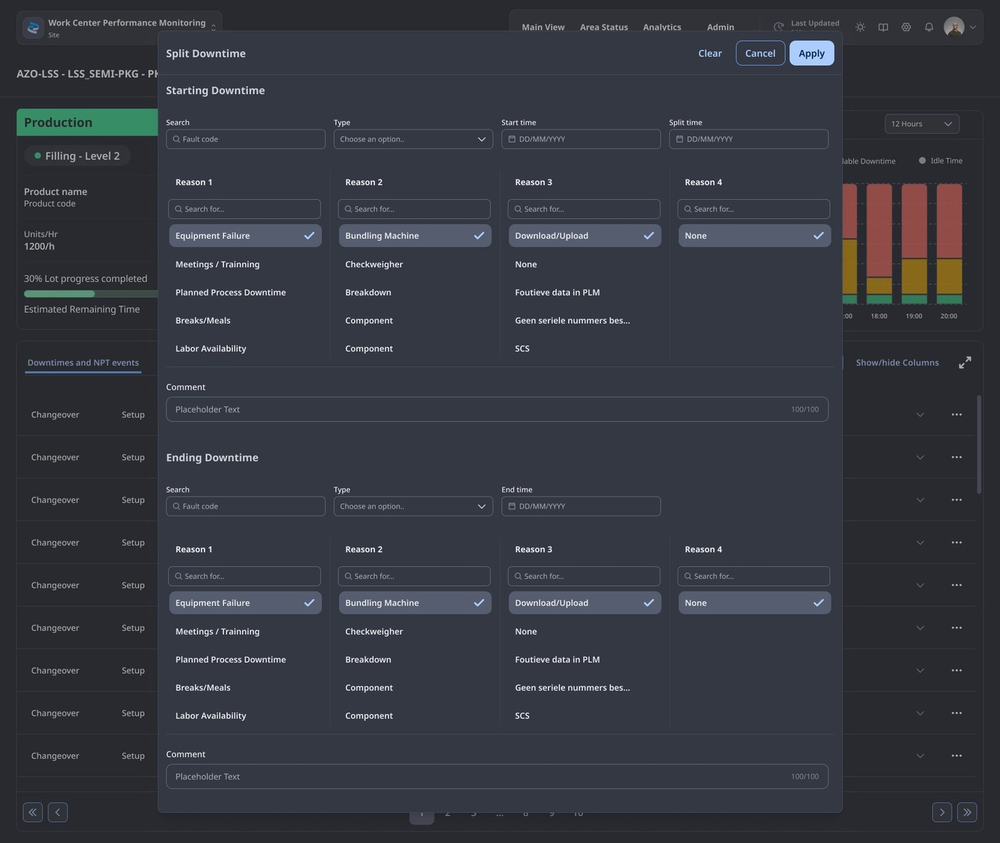
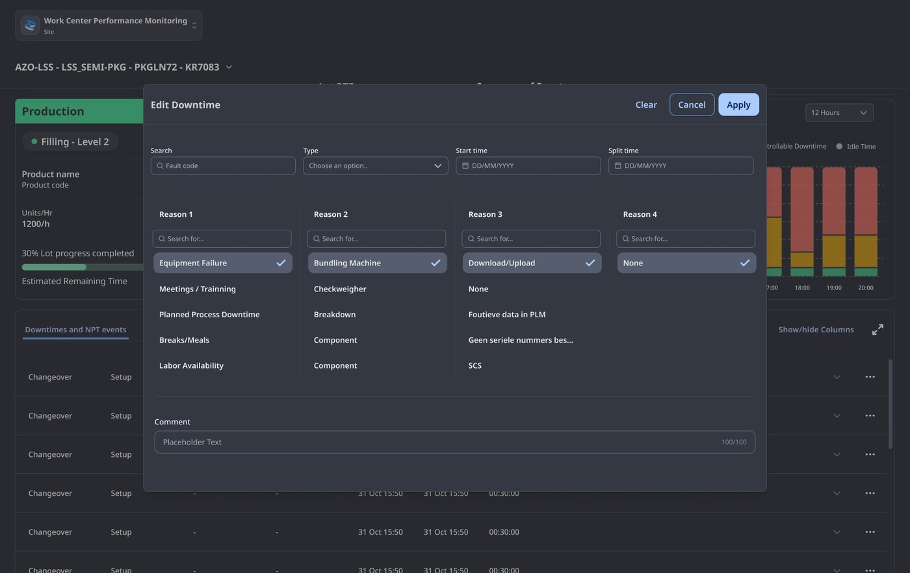

Redesigning the manufacturing performance system for a Tier-1 pharmaceutical operation — eight surfaces, four roles, thirteen languages, and a reason taxonomy four levels deep. The brief was to absorb operational complexity without flattening it.

The platform — referred to here as WPM — is the Manufacturing Execution System (MES) that operators, supervisors and engineers rely on to monitor, classify and correct production performance in real time. It sits behind every Tier 0, Tier 2 and Tier 3 daily management meeting, and behind every shift handover.
Before the redesign, WPM had grown by accretion. New event types, new reason codes, new metric variants and new admin toggles had been added one product cycle at a time, in twelve languages, by three teams. The cost was paid daily on the floor — in misclassified downtimes, in shift reports compiled by hand, in engineers correcting last week's data because no one knew where the correction lived.
Field sessions across packaging and batch lines made one thing clear: WPM was being used by people whose immediate priority was never the screen. The redesign had to resolve a different tension for each role — without inventing new ones.
The redesign organised WPM around four anchor surfaces. Each one answers a different question — what is the line doing now, how well is it doing it, what went wrong, and where is the rest of the plant. The same visual grammar runs through all four, so moving between them never feels like changing tools.

The Main View opens with a single horizontal triad: the ANDON card states what the lot is doing, the Metric panel states how well it is doing it, and the Sequence of Events graph states what just happened.
The Metric panel shows one KPI at a time — selected from eight possible — because the alternative, a wall of small numbers, is what the redesign was hired to remove. The colour logic is consistent: the speedometer is green above target, red below; the trend arrow is green when rising, red when falling, grey when flat. No other colour carries meaning.
The Data Entry Tables panel is the most-used surface in WPM and the most demanding to design. Operators enter downtime data here; supervisors review it; engineers correct it. Three tables share one panel — Downtime & NPT events, Production data, Waste data — and the panel itself must support sort, filter, show/hide columns up to a maximum of ten, and a full-screen expand.
The redesign treats expertise as a feature, not a problem. Reason levels one through four are visible as table columns rather than buried in a nested drill-down. Sort is available on every column. Filtering hides what isn't needed without destroying the underlying data. The panel earns its density.
The reason tree had been a four-step modal in the previous version. As columns, the same four levels become scannable in a glance and sortable by any one of them. Hierarchy survives flattening.
Operators filter out closed events to reduce visual noise during a shift. The underlying records remain. Engineers reviewing the same line two days later see everything.
The full-screen expand is the same table, larger — not a different view with different affordances. Muscle memory survives the resize.
The Split Downtime and Edit DT/NPT modals are where the engineer's tension — correction against history — gets resolved. Both flows operate on the same logic: the original event is preserved, the split or edit becomes a new record with provenance attached, and the audit trail explains why.


The Area Status page is the supervisor's surface. It renders one panel per configured line, each with the same six pieces of information — line name, lot number, velocity, status, yield, RTE — and one shared visual cue: the exclamation mark.
The exclamation appears when actual duration exceeds target, and only then. It is the single piece of escalation grammar in the system. A supervisor scanning the page knows, without reading any number, which lines need attention first. Clicking any panel drills directly into that line's Main View.
Behind the four operational surfaces sits the Administrator layer — where reason taxonomies, ANDON thresholds, DT menus, step configurations and changeover matrices are defined. The principle that runs through the floor surfaces runs through here too: density without noise. A site admin in Puurs or Freiburg can configure thirteen languages, schedule downtimes against future event frames, and copy a step group from one line to another — without filing a ticket.
Tier-1 pharmaceutical manufacturer
Regulated manufacturing
Multi-site, global
Silvana Brandán
Lead product designer
+ 1 engineering partner
Process engineers
Plant IT
18-month rollout cadence
2024 – 2026
18-month engagement
Deployed across multiple sites
This case study focuses on discovery, principles and the interaction model. The applied visual design — type scale, table density, ANDON state colours, the modal architecture — is documented separately.